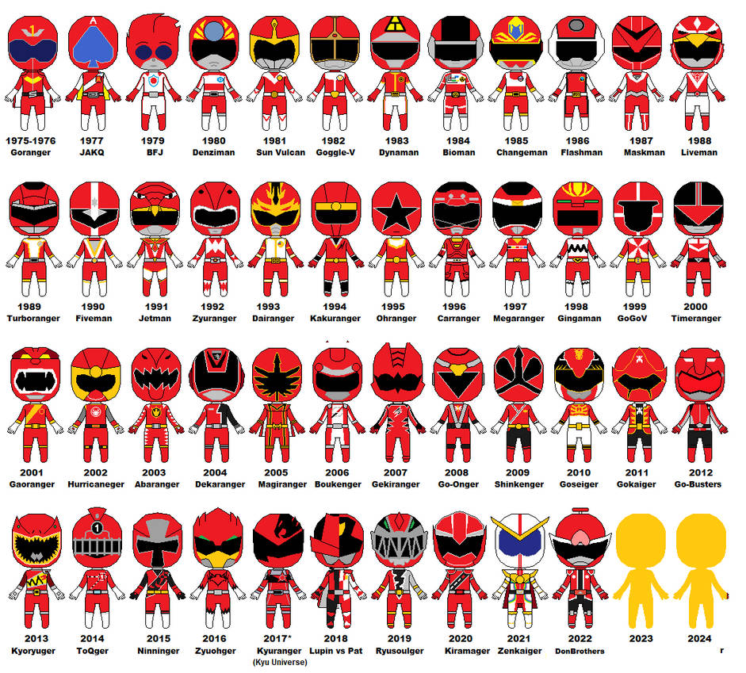

Super Sentai, Japan's beloved superhero franchise, has captivated audiences for over four decades with its vibrant action, compelling stories, and memorable characters. Premiering in 1975 with "Himitsu Sentai Gorenger," Super Sentai set the stage for a genre that combines teamwork, bravery, and a splash of colorful spandex. Each Super Sentai series features a new team of heroes, typically five, who harness unique powers and skills to battle evil forces threatening the world. These heroes don distinctive, color-coded costumes and pilot mighty mecha, forming powerful robots in a climactic showdown against colossal monsters. A key element of Super Sentai's enduring appeal is its blend of thrilling action and heartfelt storytelling. The series often explores themes of friendship, perseverance, and sacrifice, making it more than just a showcase of spectacular battles and special effects. Super Sentai's influence extends far beyond Japan. Its adaptation into "Power Rangers" in the early 1990s brought the franchise international fame, creating a cultural phenomenon that spans generations. As Super Sentai continues to evolve, it remains a testament to the power of teamwork and heroism. With each new season, it invites audiences into a world where courage and camaraderie triumph over darkness, proving that heroes come in every color.
Top Seasons
Season
Name
Popularity
35
Gokaiger
NO 1
33
Shinkenger
NO 10
40
Zyougher
NO 20
The Eras of Super Sentai
by Aaron Nguyen

The Eras of Super Sentai: A Colorful Journey Super Sentai has been a beloved part of Japanese TV since 1975, captivating audiences with its heroic teams and exciting adventures. Let’s explore the three main eras of this iconic franchise. Showa Era (1975-1989) The Showa Era began with “Himitsu Sentai Gorenger” and continued until “Kousoku Sentai Turboranger.” This era introduced the classic elements we love: teams of heroes in bright, color-coded suits, powerful transformation sequences, and massive robots, or mecha, battling gigantic monsters. It set the foundation for everything that followed, with a fun and pioneering spirit. Heisei Era (1989-2019) The Heisei Era took Super Sentai to new heights, from “Chikyuu Sentai Fiveman” to “Kishiryu Sentai Ryusoulger.” This period brought deeper stories, more developed characters, and impressive special effects. It was also during this time that Super Sentai reached global audiences through its adaptation into “Power Rangers,” making it a worldwide phenomenon. Reiwa Era (2019-Present) Now, we’re in the Reiwa Era, which began with “Mashin Sentai Kiramager.” This era uses the latest technology for stunning visual effects and introduces fresh, creative stories. The Reiwa Era continues to push the boundaries, keeping the spirit of Super Sentai alive and exciting for new generations. Each era of Super Sentai has its unique charm, reflecting the growth of this timeless franchise. Whether you're a long-time fan or new to the series, there's always something thrilling to discover in Super Sentai.